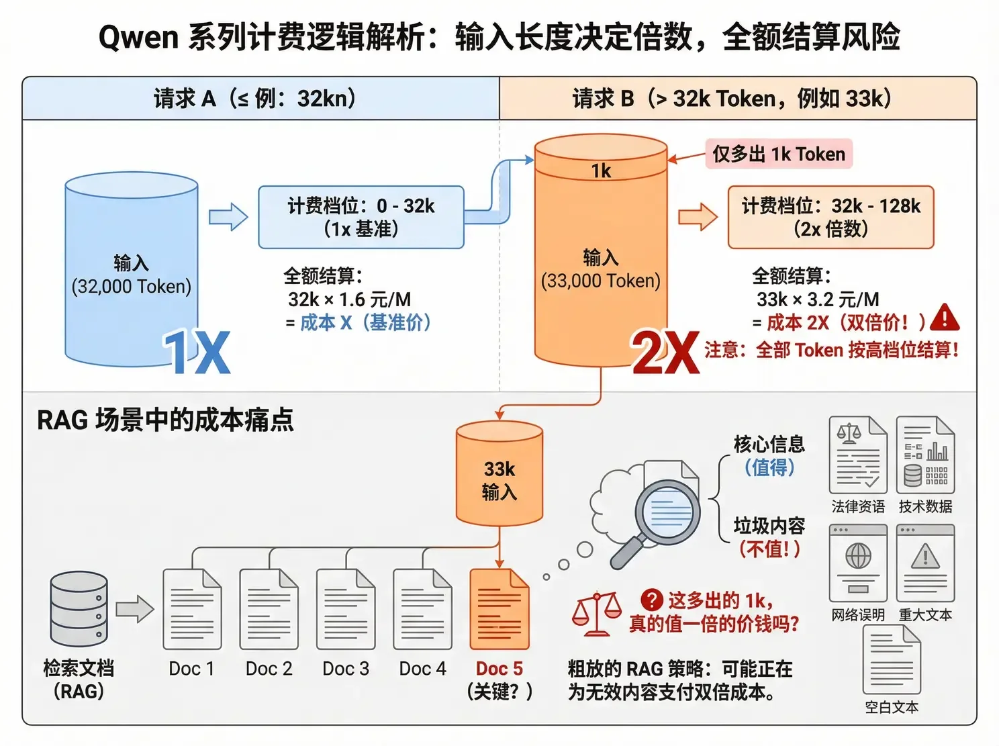

Token 降本增效 · 5 / 13
Qwen 的阶梯逃逸：32k 红线
Qwen 系列的分档逻辑和智谱完全不同：按输入长度计费，分界线在 32k 和 128k。最容易被忽略的计费细节是——越线后不是「超出部分加价」，而是整个请求全量按高价档结算。
输入分档全量结算RAG 成本预算感知截断
现象：多 1k Token，整单翻倍
| 输入长度（Qwen3-Max） | 单价（元/M，折后） | 相对基准 |
|---|---|---|
| 0 – 32k | 1.6 | 1x |
| 32k – 128k | 3.2 | 2x |
| 128k – 252k | 4.8 | 3x |
假设你的输入是 33,000 个 Token，仅比 32k 多了 1,000。整个请求的全部 33k Token 都按 3.2 元/M 结算——不是前 32k 按 1.6 元、后 1k 按 3.2 元。多出来的这 1k，直接让整单成本翻倍。
交互演示 · 阶梯上的账单
拖动输入长度，注意 32k 和 128k 两条红线附近发生了什么。
28k Tokens
32k128k200k
适用单价
单次输入成本
日均 10 万次的月账单
RAG 场景：在为垃圾付双倍的钱
在 RAG 场景这个问题尤其尖锐。假设检索回来 5 个文档片段，拼起来刚好 33k。这时候需要问一个问题：第 5 个片段对最终回答的贡献有多大？
如果它是核心的法律条款、关键的技术参数，那可能值得。但如果它只是网页页脚、版权声明、重复的段落，甚至只是格式带来的多余换行符呢？一些粗放的 RAG 策略，正在为垃圾付双倍的钱。

仅多出 1k Token，全部 33k 都按 2 倍价结算。RAG 检索的第 5 个片段，真的值一倍的价钱吗？（图：作者分享原稿）
策略：预算感知的动态裁剪
解法是把「32k」从一个事后才发现的账单事故，变成一个写进代码的预算约束。拼 Prompt 的逻辑不能是无脑拼接：
✗ 错误做法：无脑拼接prompt = system_prompt + context + user_query
✓ 正确做法：预算感知
def build_prompt_within_budget(system_prompt, context_chunks,
user_query, budget=32000):
prompt = system_prompt + user_query
current_tokens = count_tokens(prompt)
selected_chunks = []
for chunk in sort_by_relevance(context_chunks): # 按相关性排序
chunk_tokens = count_tokens(chunk)
if current_tokens + chunk_tokens > budget:
break # 到达预算上限，停止添加
selected_chunks.append(chunk)
current_tokens += chunk_tokens
return system_prompt + ''.join(selected_chunks) + user_query
| 场景 | 策略 | 说明 |
|---|---|---|
| RAG 检索 | 动态 Top-K | 不固定取 5 个 chunk，而是取到「快到 32k」为止 |
| 多轮对话 | 历史压缩 | 历史接近 30k 时触发 Summarization |
| 长文档处理 | 分段处理 | 不要一次性塞入，采用 Map-Reduce 模式 |
可以在业务里画一条红线：32k 是预算上限，除非有极强的业务理由，否则绝不踏入高价区。
三大定价策略对照
| 厂商 | 跳档类型 | 关键阈值 | 应对策略 |
|---|---|---|---|
| 智谱 GLM-4.6 | 输出长度跳档 | 200 Tokens | 任务拆分，或切换到非输出分档模型 |
| 通义 Qwen | 输入长度跳档 | 32k / 128k | 预算感知截断，动态裁剪上下文 |
| DeepSeek | 思维链累积 | 多轮膨胀 | 上下文清洗，用完即弃 |
本节要点
✓
Qwen 全量结算：33k 的请求，全部 33k 都按 2 倍价算。多 1k，翻一倍。
✓
问一句「第 5 个片段值不值」：粗放 RAG 正在为页脚、免责声明和换行符付双倍的钱。
✓
把 32k 写成代码里的预算约束：按相关性排序、到预算即停。动态 Top-K 优于固定 Top-K。
内容来源：整理自作者团队内部分享《AI Token 降本增效策略分享》「Qwen 的阶梯逃逸」。RAG 的成本与优化策略在大模型原理 · RAG 的代价与优化策略有另一个角度的展开，可对照阅读。